Hovenier in Arnhem, sinds 1995
Een tuin waar je elke dag blij van wordt.
Wij ontwerpen, leggen aan en onderhouden tuinen in Arnhem, Nijmegen, Oosterbeek en Velp. Met vaste hoveniers, heldere afspraken en oog voor detail.
Maandag tot en met vrijdag bereikbaar van 07:30 tot 16:30.
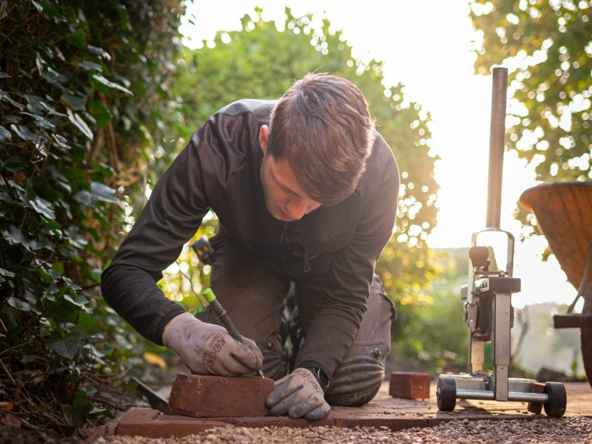
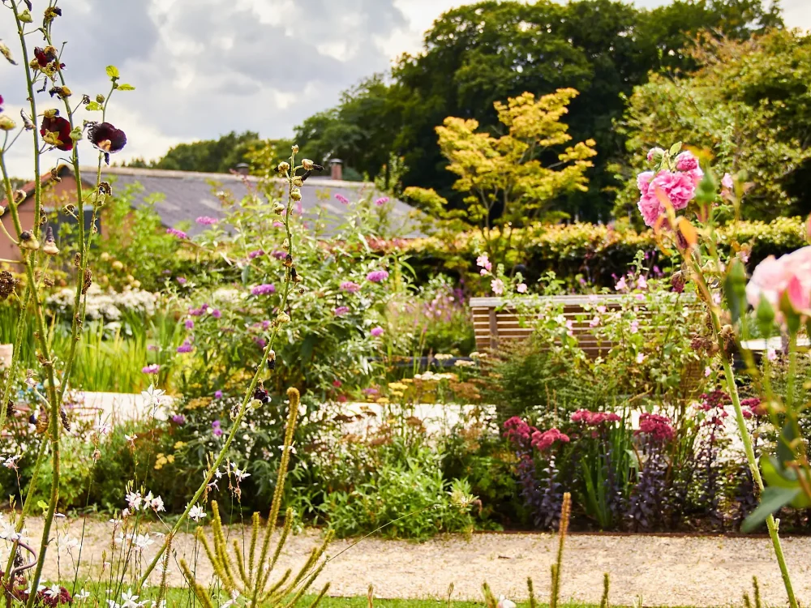
Van eerste schets tot vaste onderhoudsbeurt
Je kunt bij ons terecht voor de hele tuin of voor één klus. Wij denken mee, ook als je nog niet precies weet wat je wilt.
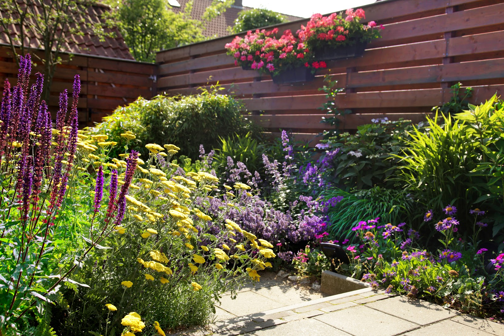
-
Tuinontwerp
Een goed ontwerp is de basis voor jarenlang tuinplezier. We letten op indeling, materialen, beplanting en onderhoud, zodat je tuin het hele jaar door in balans blijft.
-
Tuinaanleg
Van knusse stadstuin tot groene gezinstuin. Van grondwerk tot bestrating, van borders tot verlichting: duurzaam, vakkundig en precies volgens afspraak.
-
Tuinonderhoud
Een tuin leeft en verandert. Wij snoeien, maaien, bemesten en houden borders in vorm, eenmalig of met een vaste afspraak. Jij hoeft vooral te genieten.
-
Boomverzorging
Gezonde bomen maken een tuin compleet. We snoeien, verzorgen en controleren ze vakkundig, met oog voor veiligheid en natuur.
-
Beplantingsplan
Sterke beplanting geeft je tuin sfeer en kleur. We kiezen soorten die passen bij jouw grond en wensen, voor een tuin die het hele jaar leeft.
-
Sedumdaken
Mooi en duurzaam. Een sedumdak zorgt voor verkoeling, vangt regenwater op en brengt groen terug op je dak.
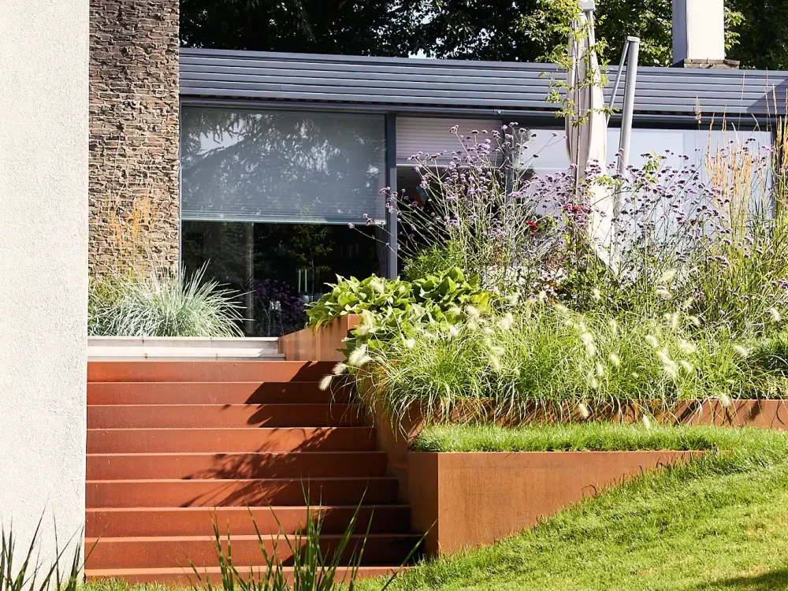
Afspraak is afspraak
We maken een duidelijk plan, houden je goed op de hoogte en zorgen dat alles klopt. Zonder gedoe, gewoon goed geregeld. Zo gaat dat in drie stappen.
-
1
Kennismaken en inmeten
We komen langs, bespreken je wensen en de sfeer die je zoekt, meten de tuin in en bekijken de situatie. Daarna krijg je een duidelijke offerte. De kennismaking is gratis.
-
2
Ontwerp en planning
Eerst een schets met indeling en beplanting, dan verfijnen we samen: beplantingsplan, verlichting, materialen en een begroting. Alles wordt zorgvuldig ingekocht en ingepland.
-
3
Aanleg en onderhoud
Ons vaste team legt de tuin aan en houdt je onderweg op de hoogte. Verandert er iets in je wensen, dan zoeken we samen de beste oplossing. Daarna houden we hem graag mooi voor je.
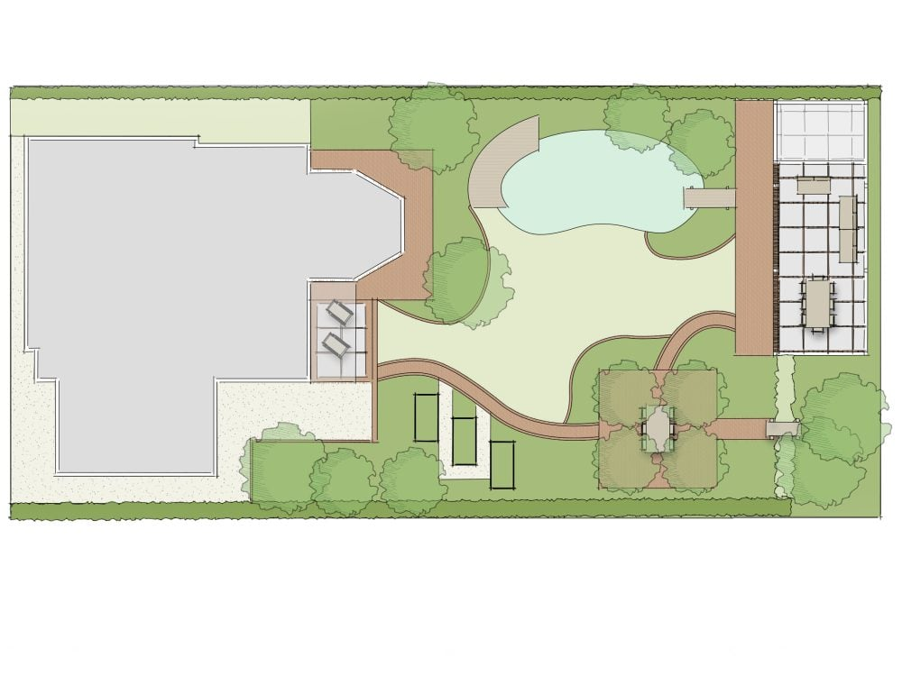
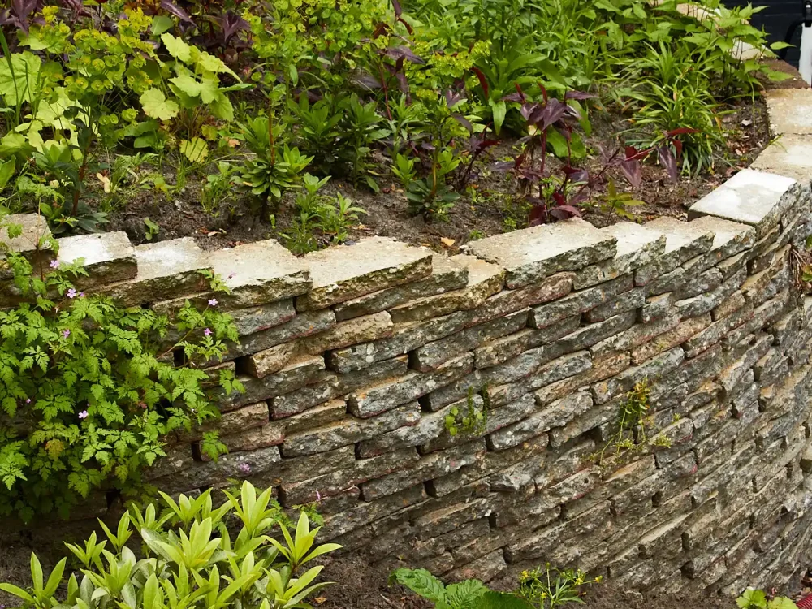
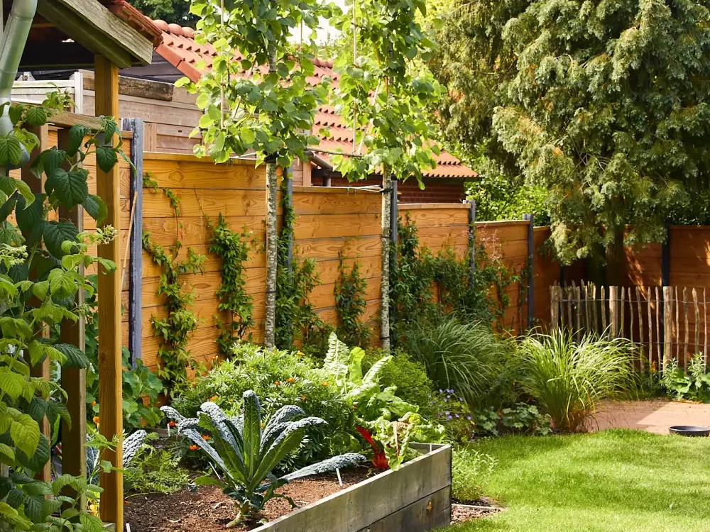
Vaste hoveniers die hun vak verstaan
Ons team bestaat uit vaste hoveniers met liefde voor groen. We werken netjes, veilig en zorgvuldig, en kiezen voor duurzame materialen en hergebruik waar het kan.
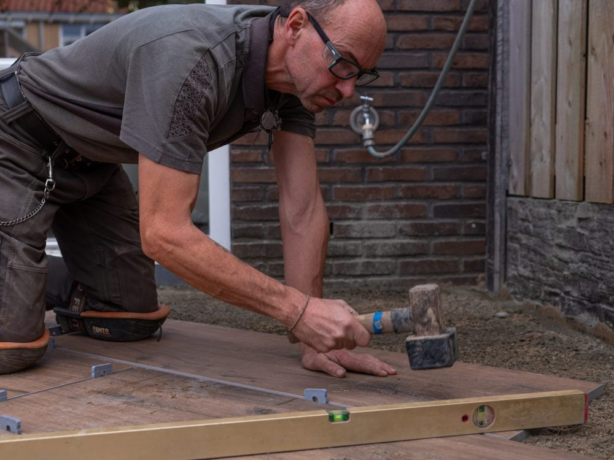
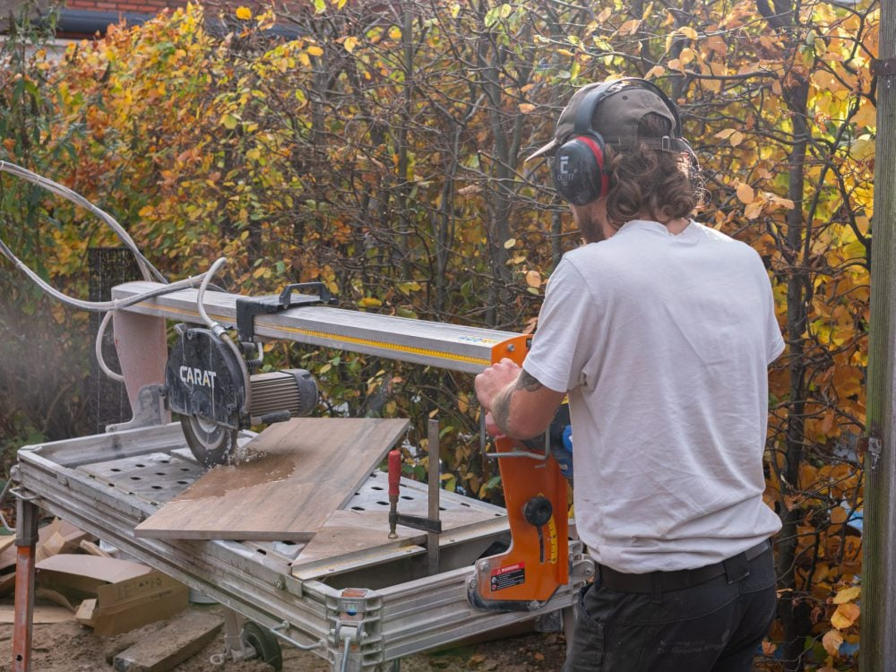
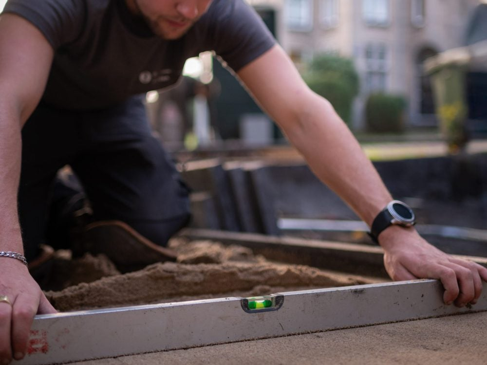
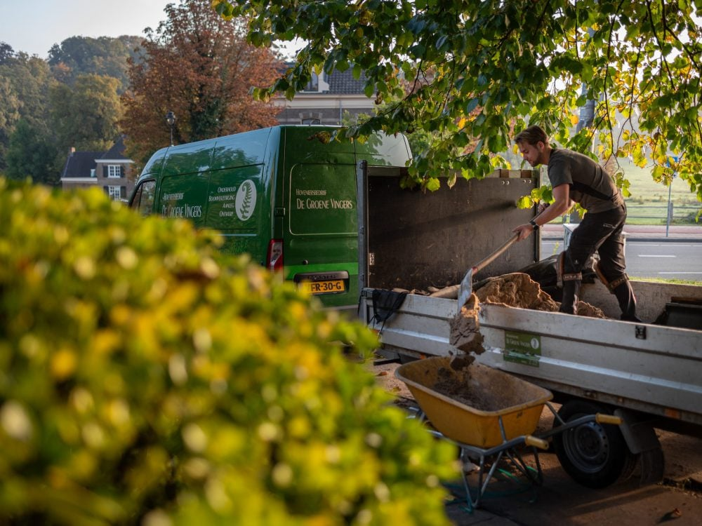
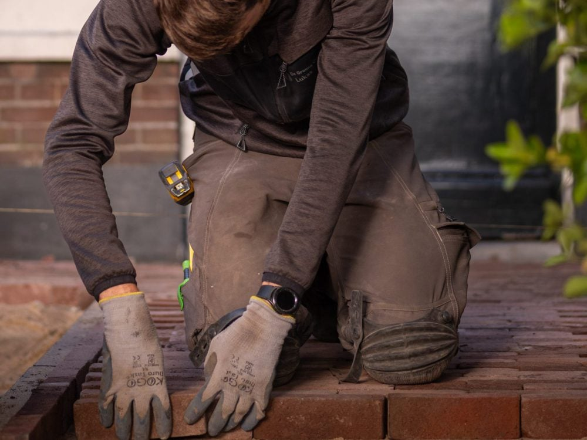
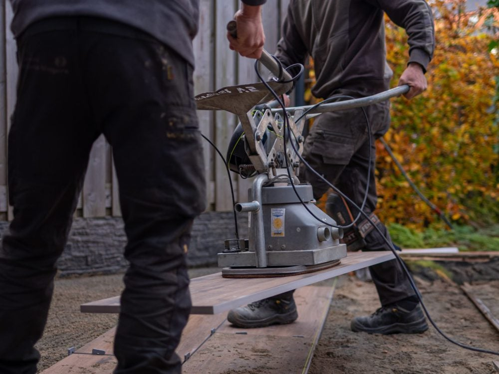
- Geen bestrijdingsmiddelen
- We werken met de natuur, niet ertegen.
- Duurzaam en hergebruik
- Materialen die jarenlang meegaan.
- Eén aanspreekpunt
- Persoonlijk contact en eerlijk advies.
- Tuinkeur, KPB en VHG
- Lid van de brancheverenigingen.
Wat klanten zeggen
4,5 uit 20 Google-reviews
"Heel tevreden over de mannen van De Groene Vingers!
Men komt persoonlijk en volgens afspraak eerst zelf kijken en binnen een paar dagen wordt de offerte gestuurd en kan met het werk worden begonnen.
Wij zijn nu gelukkig van het onkruid "hanepoot" in onze border af!"
"Ik had twee chaotische bomen in mijn voortuin die nodig gesnoeid moesten worden. Erg snel geregeld. Ben benieuwd hoe ze er dit voorjaar weer bijstaan. Dank je wel Hans Willem."
"Zij hebben bij ons netjes werk geleverd. We zijn erg tevreden met de eindresultaat."
Zullen we eens komen kijken?
Of je nu al precies weet wat je wilt of nog twijfelt: bel of mail ons voor een gratis kennismaking bij jou in de tuin.
026 361 0450 info@de-groene-vingers.nlBereikbaar
| Maandag tot en met vrijdag | 07:30 tot 16:30 |
| Zaterdag en zondag | gesloten |
Adres
Simon Stevinweg 33
6827 BS Arnhem
Werkgebied
Arnhem, Nijmegen, Oosterbeek, Velp en omgeving. Voor particulieren, bedrijven en overheden.